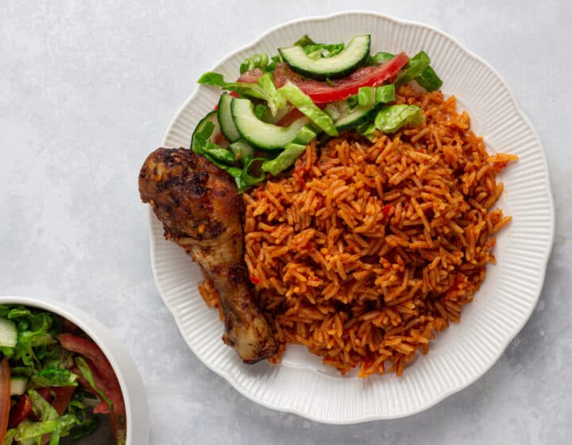

Home
Jollof Rice

Homemade Nigerian Jollof rice
Nigerian jollof rice is a rich, flavorful one-pot dish made by cooking rice in a well-seasoned tomato-based sauce.
The base is usually prepared by blending tomatoes, red bell peppers, onions, and sometimes scotch bonnet peppers ,
then frying the mixture in oil until it becomes thick and deeply aromatic. Tomato paste is often added to intensify the color and flavor,
along with spices like thyme, curry powder, bay leaves, seasoning cubes, and salt. The rice is then added and cooked slowly in the sauce,
absorbing all the flavors as it simmers.
What makes Nigerian jollof rice stand out is its bold, smoky taste, often achieved by allowing the bottom layer to slightly toast during cooking
(commonly called the “party jollof” effect). It is commonly served at celebrations and gatherings, paired with fried plantains, grilled chicken, beef, or salad.
The result is a vibrant, slightly spicy, and deeply satisfying dish that is both comforting and festive.
Ingredients
- Long-grain parboiled rice
- Tomatoes
- Red bell peppers
- Scotch bonnet peppers
- Onions
- Vegetable oil (or palm oil in some variations)
- Chicken or beef stock (for flavor)
- Thyme
- Curry powder
- Bay leaves
- Seasoning cubes
- Salt
- Garlic(optional)
- Ginger(optional)
- Grilled or fried plantain(optional)
- Beef or Goat meat(optional)
- Salad(optional)
Steps
- Prepare the pepper base: Blend tomatoes, red bell peppers, scotch bonnet peppers, and onions into a smooth mixture.
- Cook the sauce: Heat oil in a pot and fry sliced onions. Add the blended pepper mixture and cook it on medium heat until it reduces, thickens, and the raw tomato taste disappears.
- Add seasoning: Stir in tomato paste, thyme, curry powder, bay leaves, seasoning cubes, salt, and any optional garlic or ginger. Let it cook for a few minutes so the flavors combine well.
- Add stock: Pour in chicken or beef stock and stir. Taste and adjust seasoning if needed.
- Add rice: Rinse the rice and add it into the pot. Stir well so the rice is fully coated with the sauce.
- Cook the rice: Cover and let it cook on low heat. Stir occasionally to prevent burning, adding a little water or stock if needed until the rice is soft and cooked through.
- Create the “party jollof” effect (optional): Allow the bottom layer to slightly toast for a smoky flavor, but be careful not to burn it.
- Serve: Once cooked, fluff the rice and serve hot with fried plantains, chicken, beef, or salad.